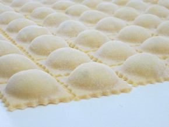

Raviolli
Raviolli
O ravioli ou ravióli são pequenos pastéis de massa feita com farinha de trigo e ovo, recheadas com carne, peixe, vegetais ou queijo e cozidos em algum tipo de molho, típicos da culinária da Itália.

Voltar